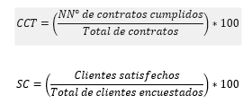

|
PSC
004| Gestión de Clientes
|
Ver.
000
|
|
|
Creado
por EGC | Aprobado por CEO
|
Fecha:
01.12.2024
|
Contenido
1.- Objetivo del Proceso................................................................................................................................................
2.- Alcance del Proceso................................................................................................................................................
3.- Matriz del Proceso...................................................................................................................................................
3.- Recursos del proceso..............................................................................................................................................
3.1.- Recursos.............................................................................................................................................................
3.2.- Responsables......................................................................................................................................................
4.- Seguimiento...........................................................................................................................................................
4.1 Metodología...........................................................................................................................................................
4.2.- Indicadores..........................................................................................................................................................
5.- Análisis y evaluación de riesgos del proceso.............................................................................................................
6.- Análisis y evaluación de oportunidades del proceso...................................................................................................
8.- Historial de Versiones.............................................................................................................................................
1.-
Objetivo del Proceso
Asegurar la satisfacción del cliente mediante la identificación,
análisis y cumplimiento de sus requisitos, necesidades y expectativas,
promoviendo relaciones de largo plazo y la mejora continua de los servicios
o productos ofrecidos.
2.-
Alcance del Proceso
El proceso abarca desde la captación de requisitos y expectativas
del cliente, la comunicación efectiva, hasta la entrega del producto
o servicio final, incluyendo el monitoreo de la satisfacción del
cliente y la implementación de mejoras.
3.- Matriz del Proceso
| ENTRADAS | PROCEDIMIENTOS (actividades) | SALIDAS |
| Requisitos y expectativas del cliente | Identificación y documentación de requisitos | Requisitos documentados y priorizados |
| Quejas y sugerencias de clientes | Análisis y resolución de quejas | Planes de acción correctiva |
| Resultados de encuestas de satisfacción | Evaluación de resultados y tendencias | Informes de satisfacción del cliente |
| Contratos y normativas aplicables | Revisión y cumplimiento de términos contractuales | Entregas conforme a lo establecido. |
3.-
Recursos del proceso
3.1.- Recursos
Para este proceso de Gestión de Contratos y Clientes se requieren:
- Humanos: Personal de atención al cliente, gerentes de cuentas y equipos operativos.
- Financieros: Presupuesto asignado para herramientas de monitoreo de satisfacción y atención de quejas.
- Tecnológicos: Sistemas de CRM (Customer Relationship Management) y herramientas de seguimiento de satisfacción.
- Información:
Registros históricos de clientes, contratos y resultados de encuestas
de satisfacción.
3.2.- Responsables - Equipo de atención al cliente
- Gerente del área de ventas o relaciones comerciales
- Representantes
de calidad.
4.- Seguimiento
4.1 Metodología
El seguimiento del proceso de Gestión de Contratos y Clientes se realiza mediante:
- Monitoreo continuo de las interacciones con los clientes.
- Realización de encuestas de satisfacción en puntos clave del ciclo de vida del cliente.
- Evaluación periódica de quejas y resolución de problemas.
- Uso de herramientas
analíticas para medir tendencias de satisfacción y fidelidad.
4.2.- Indicadores
% de contratos cumplidos en tiempo y forma.
% de satisfacción del cliente.
(Mide el desempeño del Proceso 004)

Justificación:
Un cumplimiento alto en ambos indicadores refleja un desempeño
eficiente en la gestión de contratos y la satisfacción del
cliente. Resultados inferiores a las metas requieren análisis y
acciones correctivas inmediatas.
Fuente de Datos: Encuestas de satisfacción, auditorías
internas, registros de contratos.
Frecuencia de Evaluación: Trimestral, con revisión
por la Alta Dirección.
Plan de Acción: Si los indicadores están fuera de
rango, se revisarán los recursos asignados y se desarrollarán
planes de mejora.
5.-
Análisis y evaluación de riesgos del proceso
La evaluación de riesgos en el proceso de Mejora incluye:La
evaluación de riesgos en el proceso de Gestión de Clientes
incluye:
- Requisitos no Claros: Falta de comprensión o comunicación de las necesidades del cliente.
- Respuestas Lentamente: Demoras en la atención a quejas o solicitudes.
- Falta de Herramientas
Adecuadas: Limitaciones tecnológicas para el monitoreo y seguimiento.
6.- Análisis y evaluación de oportunidades del proceso
- Automatización del CRM: Implementación de software para gestionar la relación con clientes.
- Encuestas Digitales: Uso de plataformas digitales para recolectar datos de satisfacción en tiempo real.
- Capacitación en Atención al Cliente: Mejora de habilidades del equipo de atención para resolver problemas de manera efectiva.
- Programas de Fidelización:
Desarrollar estrategias para recompensar y retener a clientes leales.
7.- Documentación de Referencia
- Contratos con clientes.
- Informes de encuestas de satisfacción.
- Registros de atención de quejas y sugerencias.
- Programas de fidelización
y comunicación.
| Versión | Fecha | Asiento | Aprueba |
| 000 | 01.12.2025 | Original | CEO |